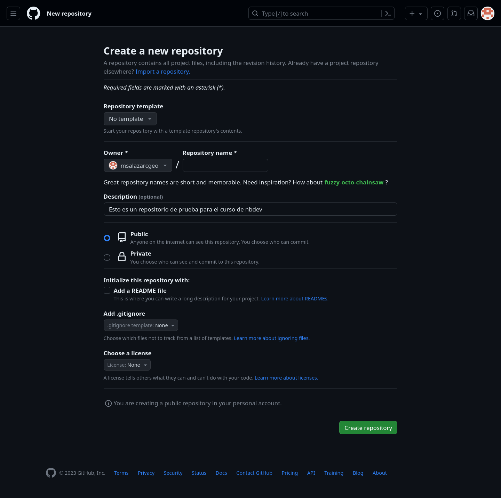
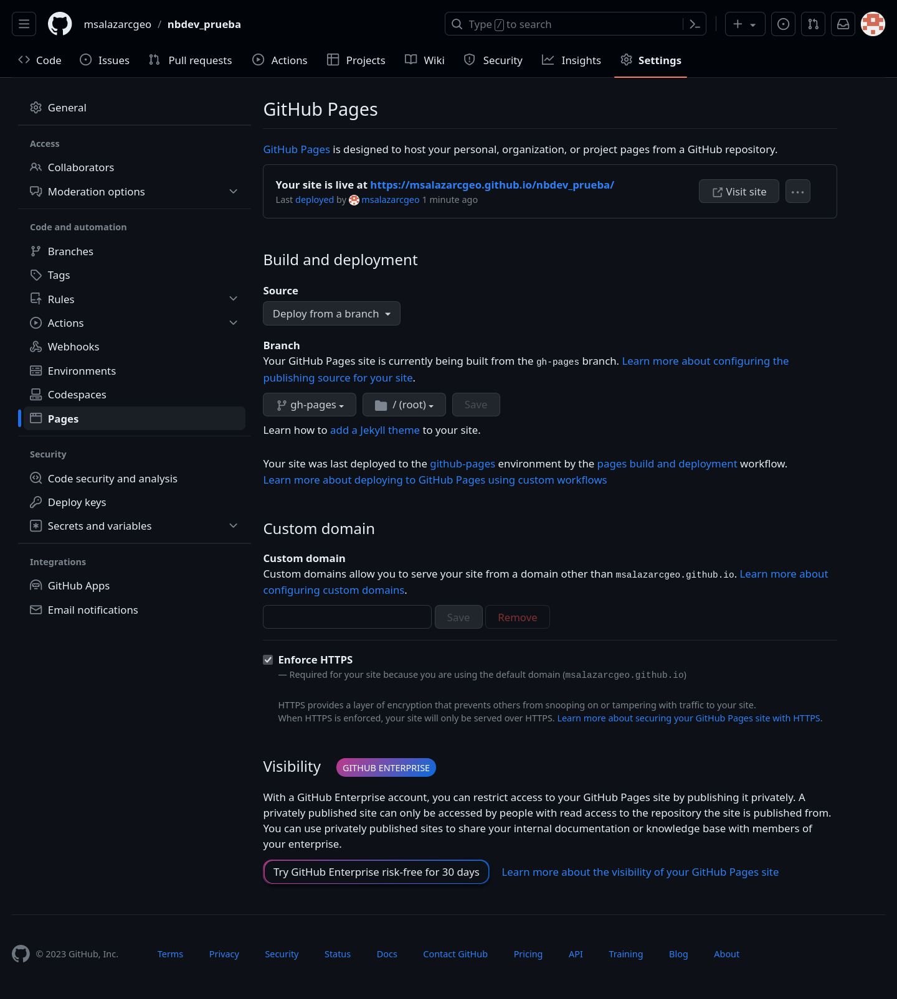
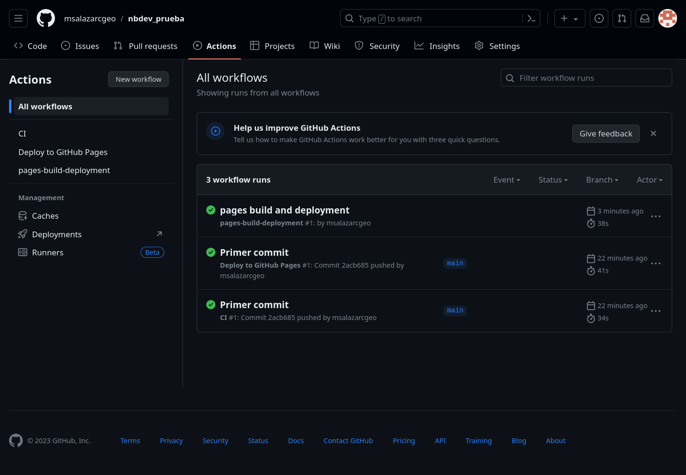
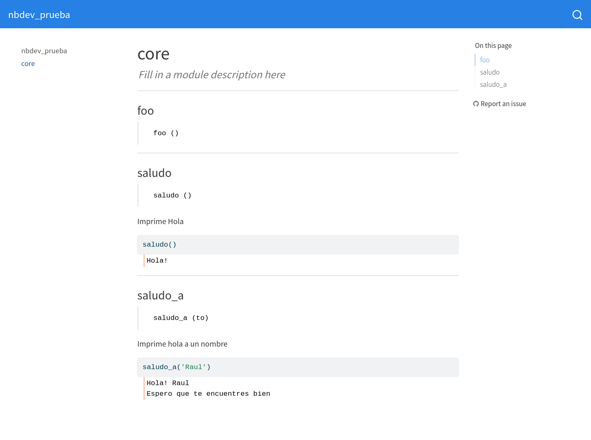

Curso Nbdev- Primeros pasos
Poniendo las cosas en orden para trabajar
Curso Nbdev- Primeros pasos (Tema 3 Cambiar en la matriz para que se a acorde)
¿Cómo me organizo ?
A continuación vamos a poner las cosas para crear un ambiente de desarrollo para automatizar todos los procesos.
Generar un repositorio
Los repositorios nos permiten mantener un orden en el código y un control de cambios, por la simpleza usaremos Github donde alojaremos el repositorio de nuestro desarrollo.

Se utiliza el siguiente comando para clonar el repositorio y poder modificarlo de forma local.
git clone git@github.com:%nombreusuario/nbdev_prueba.gitPodemos observar que no hay nada dentro del repositorio, incluso cuando se ejecuta el código anterior nos muestra una advertencia que estamos clonando un repositorio vacio.
warning: You appear to have cloned an empty repository.Nbdev contiene un comando para añadir toda la estructura necesaria para poder generar nuestro paquete junto con su documentación.
nbdev_newEste comando debera ejecutarse dentro del directorio del repositorio. El comando genera tres subdirectorios
- Un subdirectorio con el nombre del repositorio (nbdev_prueba)
- nbs
_proc
Y unos archivos
- License
- MANIFEST.in
- README.md
- settings.ini
- setup.py
De los anteriores, el que nos interesa es el settings.ini en el cual se controla la mayoría de las cosas dentro de nuestro paquete.
Vamos a modificar nuestro repositorio en github para ver que todo se sincronize y funcione.
$ git add .
$ git commit -m 'Primer commit'
$ git pushSi vamos a nuestro repositorio podemos observar que ya tenemos los archivos y los subdirectorios en Github igual que lo tenemos dentro de nuestros archivos locales.

Habilitar Github Pages y flujos de trabajo
Una de cosa que nos promete nbdev es la generación de documentación, pero es necesario tener un lugar donde se pueda consultar. Un lugar donde podemos tener alojada la documentación es en Github Pages la cual nos permite generar un sitio web con la documentación desde el repositorio.
Aunque nbdev tiene por defecto el uso de Github Pages esto puede ser modificado y tener alojada la documentación en otra parte.
Para habilitar en el repositorio hay que ir a la parte de “Settings” del repositorio y en el menu (Izquierda) en “Pages”. En esta sección se cambia de “Branch” a “gh-pages” y se da click en “Save”.

La página se encuentra alojada en una dirección similar a https://%nombreusuario.github.io/nbdev_prueba/. Pero primero esta debe ser generada por Github.
Una de las características de Github es que podemos generar ciertas acciones y flujos de trabajo de forma automatizada dentro del repositorio. Estas acciones nos permiten verificar que tanto el código del paquete funcione de manera adecuada, como el despliegue de nuestra documentación se haga de forma correcta. Integrando esto evitamos el desgaste de hacerlo de forma manual.
Cuando nuestra pagina de documentación se encuentre disponible en la pestaña de “Actions” del repositorio podremos ver (✅) en “pages build and deployment”. En caso de que se vea (❌) significa que algo a salido mal.

Para poder ver la documentación que se creo nos podemos dirigir a la la cual estará alojada en algo similar a https://%nombreusuario.github.io/nbdev_prueba/

Hacer la primera edición
Ya que hemos generado un repositorio y hemos modificado las configuraciones para tener la documentación alojada de forma automatica vamos a hacer la primera edición a nuestro paquete.
Antes de editar
Antes de esto vamos a ejecutar el siguiente comando
$ nbdev_install_hooksEste comando nos permite instalar ciertas extensiones en jupyter Notebook y JupyterLab, las cuales nos permitiran limpiar los notebooks de metadatos que no son necesarios en los repositorios. Y arreglar ciertos elementos de los notebooks los cuales pueden llegar a causar conflictos cuando se hace uso de las acciones de git.
Esto nos ayuda, pues es común que ciertos datos se modifiquen sin haber editato el notebook, esto sucede por el simple hecho de hacer su ejecución o abrir el notebook.
nbdev_mergeNos ayuda a poner los notebooks de forma que al hacer el uso de acciones depullmerge,rebaseostashdentro de git, no modifiquen los notebooks y estos se puedan ejecutar entre los colaboradores del repositorio.nbdev_cleanLos notebooks de Jupyter incluyen muchos metadatos que no se llevan bien con sistemas de control como git. Por tal motivo nbdev installa un “hook” el cual elimina estos metadatos o los remplaza por versiones genéricas que no afectan la ejecución o visualizaciones dentro del notebook.nbdev_trustUn efecto secundario que se tiene al hacer uso de los notebooks de Jupiter es que estos no funcionan dentro de repositorios compartidos. La razón es que estos pueden ejecutar código HTML o código de JavaScript el cual puede llegar a contener codigo malicioso. Por tal motivo el comportamiento por defecto de los notebooks de Jupyter es preguntar si se puede confiar en el notebook cada vez que se abre esto puede ser una problemática en el flujo de trabajo por tal motivo se puede corrernbdev_trustpara evitar que cada vez que se abre un notebook pregunte si es de confianza.
Advertencia
No se debe de usar los hooks de nbdev dentro de un repositorio que no se confie.
Los hook de nbdev funcionan para cualquier repositorio, sin importar si se usa nbdev o no para generar un paquete o biblioteca.
Configurar
Nbdev es muy modificable, esto se encuentra dentro del archivo settings.ini. Para crear el archivo se puede ejecutar nbdev_create_config.
Editamos
Abrimos el archivo nbs/00_core.ipynb, el cual se generó cuando ejecutamos nbdev_new. Dentro de éste se pueden observar las directrizes más importantes para generar un documento que nos servira para poder hacer tanto nuestro paquete, la documentación y su empaquetado.
Expliquemos el comportamiento de las celdas que se encuentran dentro de este notebook.
La primera celda contiene
# core
> Fill in a module description hereaquí definimos que el módulo a crear se llamara core y la descripción del mismo. La celda contiene un encabezado H1 de Markdown #y una cita de Markdown donde se describe el módulo.
La segunda celda
#| default_exp corees una directriz en la cual se decide el módulo al cual el notebook exportará lo que se desee. Como se encuentra se exporta al módulo core.
En la siguiente celda
#| hide
from nbdev.showdoc import *la directriz #| hide nos dice que esta celda no parecerá y tampoco la salida de la misma. Esto nos sirve para poder hacer ciertas pruebas pero que no se desean que sean exportadas ni que sean parte de la documentación.
En la celda siguiente
#| export
def foo(): passla directriz #| export exportará el contenido de la celda al módulo.
La última celda
#| hide
import nbdev; nbdev.nbdev_export()usa la directriz #| hide para ocultar el código y la salida de la celda, lo que se ejecuta dentro de la celda es lo que permite exportar lo que se indicó dentro del notebook al módulo.
Vamos a modificar este notebook para hacer un módulo con funciones sencillas.
Agregamos la siguiente celdas antes de la última celda en el notebook sin editar.
#| export
def saludo():
"""Imprime Hola"""
print('Hola!')
returnsaludo()#| export
def saludo_a(to):
"""Imprime hola a un nombre"""
print('Hola!', to)
print('Espero que te encuentres bien')
returnsaludo_a('Raul')show_doc(saludo_a)Las celdas sin la directriz #| export nos pueden servir para probar las funcionalidades dentro del módulo o bien para ser parte de la documentación como ejemplos. En la celda se utiliza la función show_doc nos sirve para mostrar el uso de la cocumentación iterna de la función saludo_a esta nos sirve para generar una documentación precisa.
Ahora podemos executar todo el notebook usando el boton ⏩ dentro de jupyterlab. Si todo funciona correctamente podemos generar la documentación, hacer pruebas y exportar a un módulo.
Ver la documentación
Para poder ver la documentación de forma local se executa el siguiente comando desde el folder del repositorio
$ nbdev_previewEl comando construye la documentación usando los noteboooks que se encuentran dentro del directorio ‘nbs/’. Y genera un servicio de pagina web de forma local a la cual podemos acceder desde nuestro navegador.
La configuración se puede controlar desde el archivo settings.ini y por defecto toma a ‘nbs/index.ipynb’ como la pagina principal. A la izquierda nos muestra una columna donde podemos ir a la documentación del modulo “core”. Podremos observar que se encuentran las modificaciónes que se hicieron al módulo.
Si se mantiene en servicio la página es posible ver los cambios que se hacen con cierto retraso.

Probar el módulo
Para probar que el todos los elementos del módulo funciona de forma correcta y si alguna modificación hecha no afecta en el desempeño de los componentes de los módulos en nuestro proyecto se utiliza el siguiente comando
$ nbdev_testSi todo esta correcto en la consola se desplegara
Success.En caso contrario se muestran los errores y se especifica los notebook en donde se encuentran.
nbdev_test puede usarse para probar de manera individual los notebooks
$ nbdev_test --path notebook.ipynbO para todo un directorio
$ nbdev_test --path tests/Generar el módulo
Para generar la documentación, desde la linea de comandos en el directorio de nuestro repositorio se llama el comando:
$ nbdev_exportEste comando genera nuestro módulo ‘core’ el cual se encontrará dentro del directorio ‘nbdev_prueba’. Si se desea se pueda abrir el archivo core.py el cual contiene una leyenda
> # AUTOGENERATED! DO NOT EDIT! File to edit: ../nbs/00_core.ipynb.informando que el archivo fue autogenerado y que cualquier modificación debe de hacerse dentro del notebook nbs/00_core.ipynb.
En core.py podemos ver que se encuentran las funciones definidas dentro del notebook en las celdas con la directriz #| export.
El módulo generado forma parte de la nuestro proyecto.
Por defecto al ejecutar nbdev_export se puede hacer sobre todos los notebooks del projecto. También se puede hacer sobre un notebook en específico.
nbdev_export --path notebook.ipynbo un directorio
nbdev_export --path dir/Esto solo sucedera si al principio del notebook se añade la directriz #| default_exp core al principio del notebook.
Añadir los cambios en Github
Para mantener el código usando Github limpiamos los notebooks con
$ nbdev_cleanEl comportamiento usual es limpiar todos los notebook que se encuentran en el directorio declarado en el archivo settings.ini en la parte de nbdev nbs_path = nbs pero también puede se puede limpiar un solo notebook
$ nbdev_clean --fname notebook.ipynbTambien podemos ejecutar
$ nbdev_readme el cual actualiza el Readme.md del repositorio.
Subir los cambios al repositorio de github
Ya podemos hacer los ‘commits’ y ‘push’ a los cambios en el repositorio para que estos se actualizen en Github. Nbdev nos da un comando para hacer todo para disminuir el tiempo para los cambios. Esto se puede hacer usando
$ nbdev_prepare el cual exporta, prueba, limpia los notebooks y modifica el README del repositorio
$ git add .
$ git commit -m 'El primer commit con modificaciones' # Cambie el texto por el que se desee
$ git pushInstalación de la biblioteca
La biblioteca se puede añadir a PIP o Anaconda en cualquiera de los casos es necesario tener una cuenta para hacer estas acciones.
En este caso se dan los pasos para hacer las instalación desde github usando pip install.
pip install "Nombre" @ git+"URL del repositorio"En nuestro caso
pip install nbdev-prueba@git+https://github.com/"Nombre_usuario_github"/nbdev_pruebaDe esta forma ya tenemos la biblioteca instalada dentro de nuestro ambiente de python. Para ver esto podemos abrir una terminal de python e importar el módulo core de nuestra biblioteca.
from nbdev_prueba import core
core.saludo_a('Juan')Y obtenemos como resultado
Hola! Juan
Espero que te encuentres bien